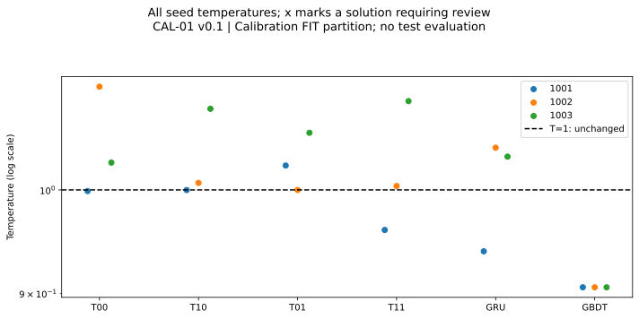
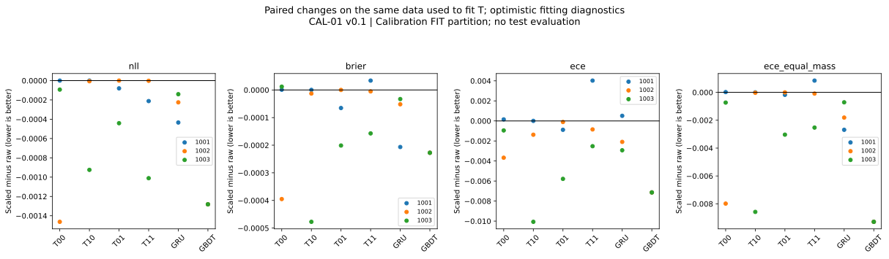
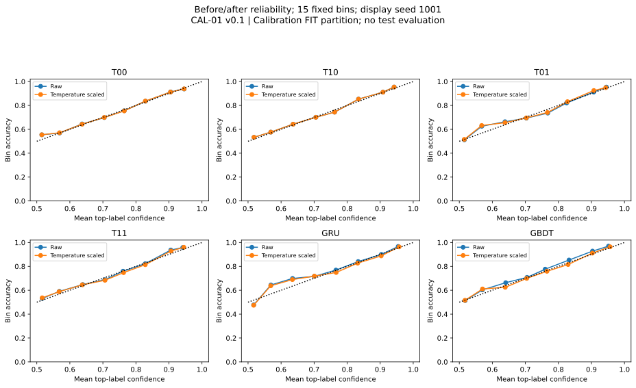
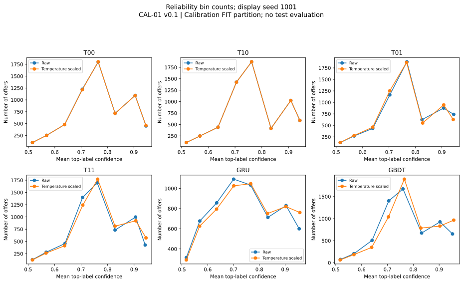
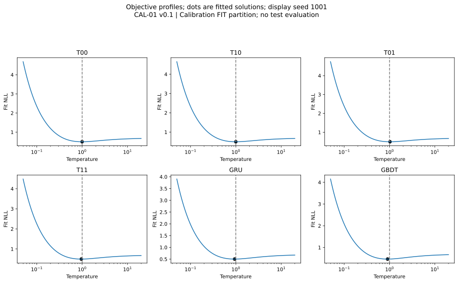

Calibration FIT partition; no test evaluation
Temperature changes confidence. Model weights and decisions at threshold 0.5 stay fixed. Fit-sample changes are not independent calibration benefits. ECE may worsen even when fitting NLL improves.
| Arm / seed | T | Raw NLL | Fit NLL | Solver status |
|---|---|---|---|---|
| T00/1001 | 0.998806 | 0.496740 | 0.496740 | INTERIOR |
| T00/1002 | 1.110868 | 0.498980 | 0.497517 | INTERIOR |
| T00/1003 | 1.028197 | 0.503979 | 0.503885 | INTERIOR |
| T10/1001 | 0.999846 | 0.497830 | 0.497830 | INTERIOR |
| T10/1002 | 1.007143 | 0.505697 | 0.505691 | INTERIOR |
| T10/1003 | 1.086122 | 0.504379 | 0.503454 | INTERIOR |
| T01/1001 | 1.025124 | 0.496384 | 0.496304 | INTERIOR |
| T01/1002 | 0.999939 | 0.499407 | 0.499407 | INTERIOR |
| T01/1003 | 1.059877 | 0.501494 | 0.501053 | INTERIOR |
| T11/1001 | 0.960007 | 0.495754 | 0.495542 | INTERIOR |
| T11/1002 | 1.003955 | 0.502409 | 0.502407 | INTERIOR |
| T11/1003 | 1.094594 | 0.502573 | 0.501562 | INTERIOR |
| GRU/1001 | 0.939398 | 0.503013 | 0.502579 | INTERIOR |
| GRU/1002 | 1.043903 | 0.505546 | 0.505320 | INTERIOR |
| GRU/1003 | 1.034446 | 0.501875 | 0.501734 | INTERIOR |
| GBDT/1001 | 0.905562 | 0.467619 | 0.466338 | INTERIOR |
| GBDT/1002 | 0.905562 | 0.467619 | 0.466338 | INTERIOR |
| GBDT/1003 | 0.905562 | 0.467619 | 0.466338 | INTERIOR |




